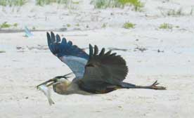

As you can see, Ralph scores occasionally. We certainly don't encourage you to feed Ralph. We feel it is important to intrude as little as possible with our wild friends and their diets. Just don't be surprised if you see him roaming the beach trying to blend in with the other fishermen.